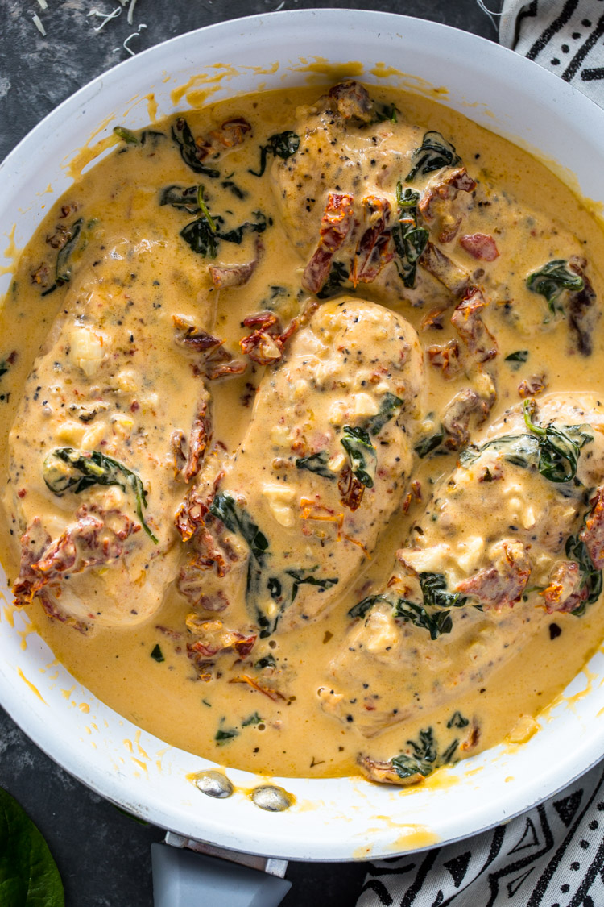

Creamy Chicken

I love this creamy sun-dried tomato chicken dinner that's wonderful for company. Everything is cooked in one skillet, which makes it even better!
Ingredients
- 4 pounds boneless skinless chicken breasts
- salt and pepper to taste
- 10 tablespoons butter, divided
- 6 cloves garlic, minced
- 2 teaspoons Italian seasoning
- ½ teaspoon red pepper flakes
- 1 cup dry white wine (such as Chardonnay)
- 2 cups chicken broth
- 1 ½ cups heavy whipping cream
- 1 cup oil-packed sun-dried tomatoes, thinly sliced
- 1 cup thinly sliced fresh basil
Steps
- Place chicken breasts in a resealable plastic bag and pound to an even thickness. If breasts are very large, cut them in half. Season lightly with salt and pepper.
- Melt 4 tablespoons butter in a large nonstick skillet over medium heat and cook 1/2 of the chicken breasts until they are no longer pink in the center and the juices run clear, 5 to 10 minutes. An instant-read thermometer inserted into the center should read at least 165 degrees F (74 degrees C). Remove from skillet and set aside. Melt another 4 tablespoons butter and repeat with the remaining chicken breasts. Set aside.
- Melt remaining 2 tablespoons butter in the same skillet and add garlic, Italian seasoning, and red pepper flakes. Cook, stirring constantly, for 1 minute. Pour in wine and bring to a boil. Reduce heat and simmer for 2 minutes. Pour in chicken broth, return to a boil, reduce heat, and simmer for 5 minutes. Stir in cream and sun-dried tomatoes. Simmer for 5 minutes.
- Stir in basil and return chicken to the skillet. Cook until chicken is thoroughly heated and sauce has thickened, about 5 minutes.